Quelques précisions sur les Univers homogènes et anisotropes
Les solutions des équations de la relativité générale dans le contexte d'un Univers homogène et anisotrope (Univers de Bianchi) forment un ensemble de problèmes passionnant et suffisamment méconnu pour que nous y consacrions quelques lignes ....
Équations d'Einstein
Les équations de la dynamique de l'Univers sont classiquement obtenues par la variation d'une action contenant deux densités de Lagrangien : L'une  décrit l'état de courbure de l'Univers et l'autre 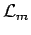 décrit l'énergie impulsion présente dans l'Univers, nous avons ainsi
décrit l'état de courbure de l'Univers et l'autre 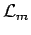 décrit l'énergie impulsion présente dans l'Univers, nous avons ainsi
 |
(1) |
Le terme  , racine carrée du déterminant de la métrique considérée.
, racine carrée du déterminant de la métrique considérée.
Dans la relativité générale d'Einstein, le lagrangien de courbure est simplement le scalaire de courbure,
| 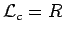 | (2) |
trace du tenseur de Ricci, double contraction du tenseur de courbure de Riemann 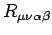
| 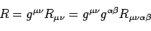 | (3) |
La densité de lagrangien de matière dépend directement de la nature de celle ci. C'est à partir de que l'on forme le tenseur énergie-impulsion
![T_μν = 2[∂Lm/∂g^μν - (1/2)g_μν Lm]](../../assets/images/recherche/bianchi/img8.gif) |
(4) |
Le minimum de l'action  pour des variations de la métrique est atteint pour les équations d'Einstein
pour des variations de la métrique est atteint pour les équations d'Einstein
| 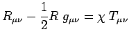 | (5) |
Sous cette forme elles font apparaître le scalaire de courbure  trace du tenseur de Ricci, on peut aussi les écrire en faisant apparaître le scalaire d'énergie impulsion 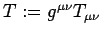, une ligne de calcul donne
trace du tenseur de Ricci, on peut aussi les écrire en faisant apparaître le scalaire d'énergie impulsion 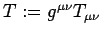, une ligne de calcul donne
 |
(6) |
La constante de couplage est obtenue par limite en champ faible de la théorie, on trouve
 |
(7) |
Univers de Bianchi
Soit l'espace métrique de la relativité générale (espacetemps), si nous supposons qu'il existe un référentiel synchrone, à un instant donné  , dans ce référentiel synchrone la métrique se décomposera de la façon suivante
, dans ce référentiel synchrone la métrique se décomposera de la façon suivante
 |
(8) |
L'homogénéité d'un espace métrique tient à l'identité de ses propriétés métriques en tous ses points. L'espacetemps est dit homogène si, à chaque instant, sa section spatiale (l'espace, d'élément de longueur 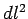) admet un ensemble de transformations conservant l'élément de longueur et permettant de mettre en relation tout point de l'espace avec tout autre : un ensemble d'isométrie. Cet ensemble est appelé groupe des déplacements.
Les classes d'équivalence des espacetemps homogènes en dimension 3+1 s'obtiennent en considérant les classes d'équivalences des constantes de structure 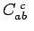 du groupe des déplacements.
Il est commode de décomposer ces constantes en une partie symétrique et une partie antisymétrique. Ceci est toujours possible en écrivant
| 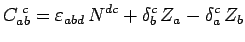 | (9) |
où  est le tenseur unité complètement antisymétrique et 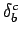 le symbole de Kronecker,
est le tenseur unité complètement antisymétrique et 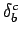 le symbole de Kronecker,  est la composante complètement contravariante d'un tenseur symétrique d'ordre 2, et (pour respecter l'identité de Jacobi) le vecteur 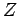 doit vérifier
est la composante complètement contravariante d'un tenseur symétrique d'ordre 2, et (pour respecter l'identité de Jacobi) le vecteur 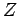 doit vérifier
 |
(10) |
La décomposition  permet de voir clairement qu'il existe neuf types distincts d'espaces homogènes en dimension 3+1. Six proviennent des 6 degrés de libertés introduits par les six composantes indépendantes du tenseur symétrique
permet de voir clairement qu'il existe neuf types distincts d'espaces homogènes en dimension 3+1. Six proviennent des 6 degrés de libertés introduits par les six composantes indépendantes du tenseur symétrique  , et trois des composantes du vecteur .
, et trois des composantes du vecteur .
Une spécification plus précise est toujours possible : Le tenseur étant symétrique il existe toujours une base dans laquelle il est diagonal. Dans cette base, nous aurons
![N^ab = diag[n₁, n₂, n₃]](../../assets/images/recherche/bianchi/img27.gif) |
(11) |
Toujours dans cette base, et sans restreindre la généralité de notre propos, la relation  permet de poser
permet de poser ![Z_b = [a, 0, 0]](../../assets/images/recherche/bianchi/img29.gif) pourvu que
pourvu que
 |
(12) |
L'énumération des cas distincts peut alors se faire en considérant toutes les possibilités de multiplicité algébrique pour une valeur propre nulle de , les différentes signatures de cette matrice et la condition 
Il vient
| Propriétés de |
 |
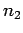 |  |
 |
Modèle |
|---|---|---|---|---|---|
| 0 est valeur propre triple de |
0 | 0 | 0 | 0 | 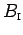 |
| 0 | 0 | 0 |  |
 |
|
| 0 est valeur propre double de |
 |
0 | 0 | 0 |  |
| 0 | |
0 | |
 |
|
| 0 est valeur propre simple de |
|
|
0 | 0 |  |
| 0 | |
|
|
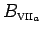 | |
|
 |
0 | 0 |  |
|
| 0 | |
|
 |
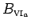 | |
| 0 | |
|
|
 |
|
| 0 n'est pas valeur propre de |
|
|
|
0 | 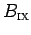 |
|
|
|
0 | 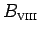 |
Les cas dégénérés équivalents n'ont pas été indiqués pour des raisons de concision. Par exemple, le cas  , 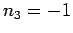 et donc forcément
, 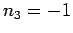 et donc forcément  est dans la classe d'équivalence B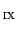 avec une signature + et 0 hors du spectre. Nous retrouvons bien les neuf cas distincts d'espaces riemanniens homogènes de dimension 3. Les chiffres romains associés aux types indiqués correspondent à la classification faite par L. Bianchi en 1898.
est dans la classe d'équivalence B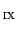 avec une signature + et 0 hors du spectre. Nous retrouvons bien les neuf cas distincts d'espaces riemanniens homogènes de dimension 3. Les chiffres romains associés aux types indiqués correspondent à la classification faite par L. Bianchi en 1898.
Une fois les espaces homogènes classifiés, il est possible dans chaque cas d'écrire le tenseur métrique associé et d'en déduire les composantes du tenseur de Ricci.
Formulation BKL (Belinski, Khalatnikov, Lifchitz)
On peut prouver qu'il existe toujours une famille de fonctions (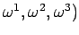, un temps conforme 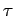 tel que 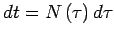 et  une fonction ''lapse'' telle que
une fonction ''lapse'' telle que
| 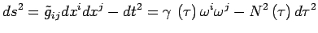 | (13) |
la dépendance temporelle de la composante spatiale de la métrique se diagonalise ![γ(τ) = diag[α₁(t), α₂(t), α₃(t)]](../../assets/images/recherche/bianchi/img60.gif)
On peut ainsi expliciter les équations d'Einstein : En considérant que l'Univers est rempli d'un d'un fluide parfait, de pression  de densité d'énergie
de densité d'énergie  et décrit par un champ de quadrivitesse de composante covariante 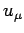 au repos dans le référentiel synchrone (
et décrit par un champ de quadrivitesse de composante covariante 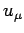 au repos dans le référentiel synchrone ( , 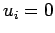)
, 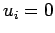)
 |
(14) |
On considère généralement que ce fluide est barotropique. C'est-à-dire qu'il suit une équation d'état de la forme
 |
(15) |
ou ![Γ ∈ [0,2]](../../assets/images/recherche/bianchi/img68.gif) est la constante barotropique. Une telle relation est très générale et s'applique à de nombreux fluides pour peu qu'ils contiennent une phase dominante.
est la constante barotropique. Une telle relation est très générale et s'applique à de nombreux fluides pour peu qu'ils contiennent une phase dominante.
En considérant une fonction lapse égale au volume de l'Univers : (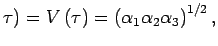, les équations de la dynamique de l'Univers homogène et anisotrope deviennent
 |
(16) |
ou l'on a noté  ,
,  ,
,  si
si  et
et
| 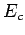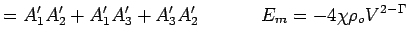 | |
| (17) | |
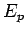 |
|
Formulation Hamiltonienne
Misner remarque dès la fin des années 60 que la première des équations 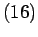 est séparée : d'un coté des termes dérivés, "cinétique" ( ), de l'autre des termes non dérivés
), de l'autre des termes non dérivés  et
et  . Le terme cinétique est une forme quadratique, elle se diagonalise par un changement de variable linéaire
. Le terme cinétique est une forme quadratique, elle se diagonalise par un changement de variable linéaire
dans ces nouvelles coordonnées les équations d'Einstein de la dynamique des Univers de Bianchi s'écrivent
 et 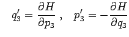 et 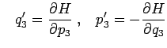 |
(18) |
avec

les produits
 et 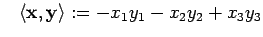 := -x₁y₁-x₂y₂+x₃y₃"> et 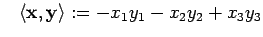 := -x₁y₁-x₂y₂+x₃y₃"> |
(19) |
les constantes

et les vecteurs

dont la projection orthogonale sur le plan  laisse entrevoir des applications géométriques ...
laisse entrevoir des applications géométriques ...
Le billard cosmique
Si l'on se place dans le vide  et que l'on pose
et que l'on pose
 et 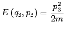 et 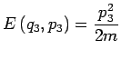 |
(20) |
l'introduction d'un "super-temps" (nom initié par R. Jantzen) 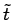 tel que  permet d'écrire les équations de la dynamique de l'Univers sous la forme
permet d'écrire les équations de la dynamique de l'Univers sous la forme
 avec avec  |
(21) |
une sorte d'énergie potentielle apparaît dans le terme
| 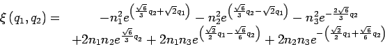 | (22) |
Il s'agit donc d'un système hamiltonien à deux dimensions concernant une particule de masse  repérée par sa position
repérée par sa position ![[q₁(t̃), q₂(t̃)]ᵀ](../../assets/images/recherche/bianchi/img101.gif) , d'énergie totale
, d'énergie totale  et dont l'énergie potentielle est
et dont l'énergie potentielle est  . La masse et l'énergie de la particule représentant l'Univers sont variables
. La masse et l'énergie de la particule représentant l'Univers sont variables
 et 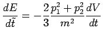
et 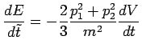
Lorsque l'on se rapproche de la singularité, les propriétés respectives de  et font que la dynamique de l'Univers homogène et anisotrope sont assimilables à celles d'une bille de coordonnées 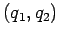 se déplaçant dans un billard dont les bandes sont formées par les isovaleurs de la fonction
et font que la dynamique de l'Univers homogène et anisotrope sont assimilables à celles d'une bille de coordonnées 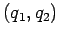 se déplaçant dans un billard dont les bandes sont formées par les isovaleurs de la fonction  Ces bandes s'éloignent, à chaque rebond la bille perd un peu de vitesse mais celle ci reste toujours supérieure à la vitesse des bandes. Il existe 5 familles dynamiquement différentes correspondants aux 5 familles de contours distincts de la fonction 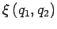.
Ces bandes s'éloignent, à chaque rebond la bille perd un peu de vitesse mais celle ci reste toujours supérieure à la vitesse des bandes. Il existe 5 familles dynamiquement différentes correspondants aux 5 familles de contours distincts de la fonction 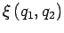.
Voir aussi
- Les billards de Bianchi - Représentation géométrique de la dynamique
- Jungle cosmologique - Exploration des solutions cosmologiques